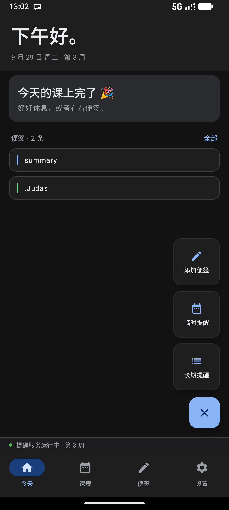
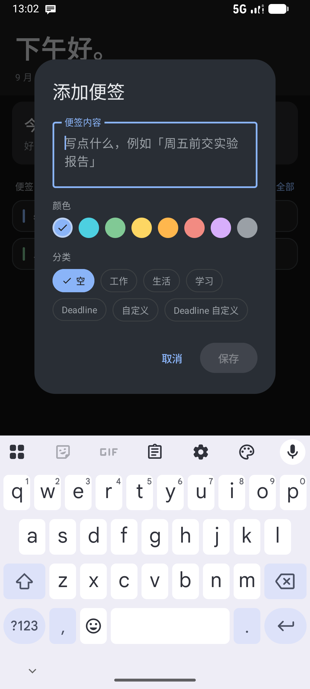
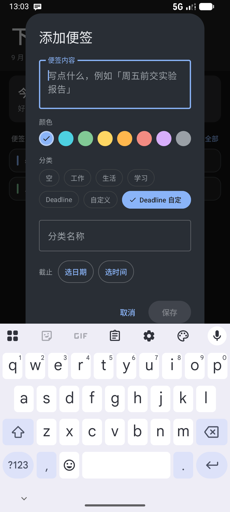
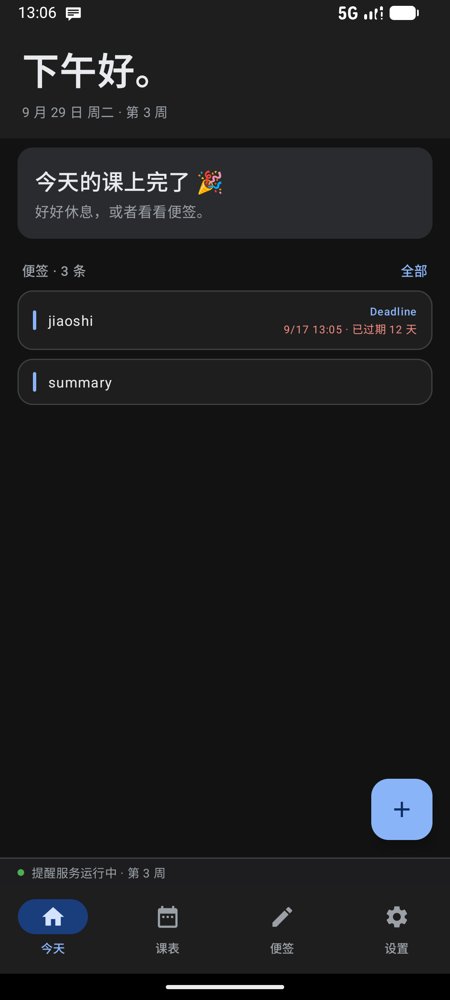
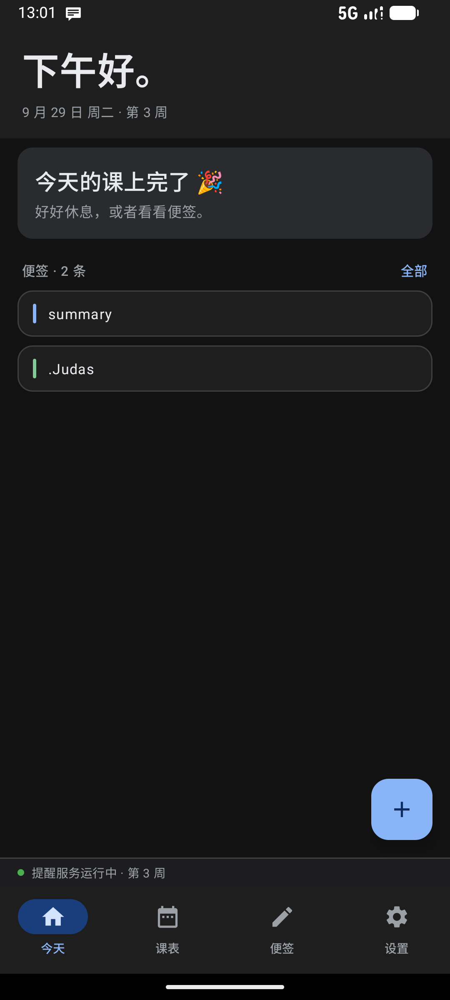
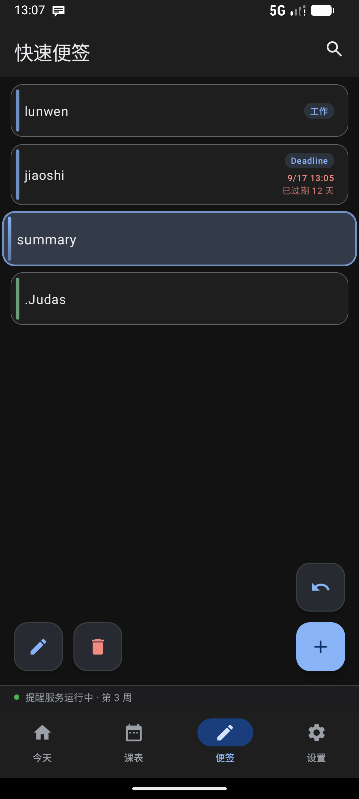
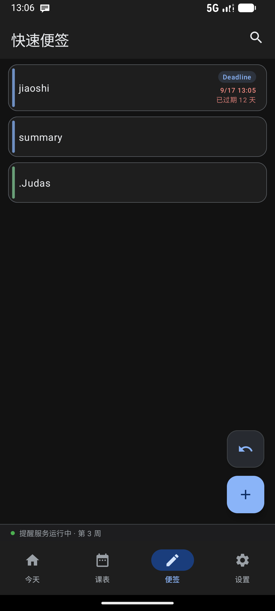
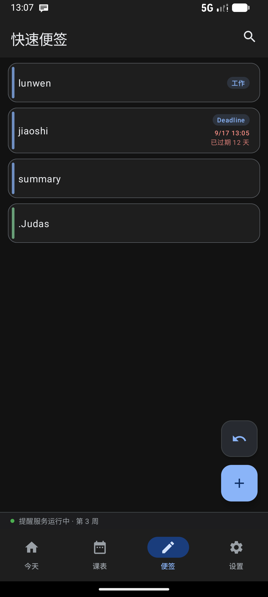
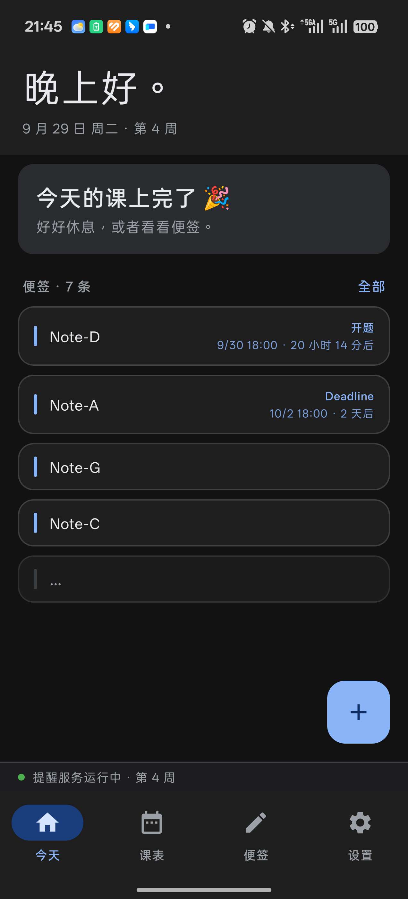

ClassReminder · Material 3 界面 v2.2
风格对齐 Google 官方应用（Material 3 + Google Blue #1A73E8）。
本页是 1:1 视觉验收稿：配色、圆角、字号、间距都按 Theme.kt /
TodayScreen.kt / MainScreen.kt 的实现还原。
v2.2 新增：今天页便签 5 条上限 · Deadline 优先 · 「…」省略栏 · 深色底纹调高一档
v2.1：加号三项菜单 · 便签分类与 Deadline 倒计时 · 今天页空闲态
⑦ 加号菜单 · ⑧ 分类 + Deadline 编辑 · ⑨ 今天页主卡三态 · ⑩ 便签页徽章 · ⑪ 规则速查 · ⑫ 便签摘要 5 条 · ⑬ 底纹对照
导航 4 项：今天 / 课表 / 便签 / 设置
① 今天（新首屏）
9:41▮▮▮ ▾
正在上课 · 还剩 27 分钟
数据结构与算法
09:40 – 11:20 · 教三 402 · 李文博
接下来
便签 · 3 条全部
周五前交实验报告，记得带 U 盘
图书馆四楼自习位已约到 18:00
② 课表（滑块切换 + 选中详情卡 + FAB 上移）
9:41▮▮▮ ▾
计算机组成原理
周二 14:00–15:40 · 教二 305 · 王海燕
③ 便签（保留独立 Tab）
9:41▮▮▮ ▾
周五前交实验报告，记得带 U 盘
9 月 27 日 · 置顶
图书馆四楼自习位已约到 18:00
9 月 26 日
④ 设置（M3 分组卡）
9:41▮▮▮ ▾
设置
提醒
1~180 分钟，超出会自动夹住
开机自启
锁屏弹窗
开启后到点会亮屏并弹窗提醒；部分系统（如 ColorOS）会拦掉全屏弹窗，此时仍会发高优先级通知并亮屏。
通知权限
没有通知权限时，锁屏提醒和前台服务都无法工作。
请求通知权限
打开系统设置
⑤ 便签编辑：双击卡片 → 改内容 + 换色
9:41▮▮▮ ▾
周五前交实验报告，记得带 U 盘
图书馆四楼自习位已约到 18:00
⑥ 顶栏问候语 · 全时段对照
| 时段 | 小时 | 显示文案 |
|---|
| 早上 | 05:00 – 08:59 | 早上好。 |
| 上午到中午 | 09:00 – 11:59 | 午安。 |
| 下午 | 12:00 – 17:59 | 下午好。 |
| 傍晚到入夜 | 18:00 – 22:59 | 晚上好。 |
| 深夜 | 23:00 – 04:59 | 夜深了。 |
实现位于 TodayScreen.kt 的 greetingFor(millis)，
由 GreetingTest.kt 的 7 个用例覆盖（含每档边界与全天 24 小时兜底）。
顶栏纵向内边距同步加大（title 字号 26→28sp），以容纳问候语显示区。
⑦ 加号按钮展开：添加便签 / 临时提醒 / 长期提醒
9:41▮▮▮ ▾
当前空闲
数据结构与算法
距离下一件事 2 小时 14 分钟后
今天的课

实机：FAB 图标旋成 ×，三个方块自下而上展开
uiautomator 读到 添加便签 / 临时提醒 / 长期提醒
⑧ 便签编辑：内容 → 颜色 → 分类（Deadline 自定义已展开）
9:41▮▮▮ ▾
毕业论文初稿
开题
9/17 13:05
已过期 12 天
图书馆四楼自习位已约到 18:00
生活
编辑便签
颜色
分类
空工作生活学习
分类名称
截止
9/17 13:05 · 已过期 12 天

实机：段落顺序 便签内容 → 颜色 → 分类
默认选中「空」，第一行 空/工作/生活/学习

实机：选「Deadline 自定义」后展开「分类名称」+ 截止区
预览行读到 9/17 13:05 · 已过期 12 天（过期走红色）
⑨ 今天页主卡三态：空闲 / 正在上课 / 课上完了
9:41▮▮▮ ▾
当前空闲
数据结构与算法
距离下一件事 2 小时 14 分钟后
正在上课 · 还剩 27 分钟
计算机组成原理
14:00 – 15:35 · 教二 305 · 王海燕

实机：今天页便签摘要行右侧读到 Deadline + 9/17 13:05 · 已过期 12 天

实机：问候语加大加粗（高 129px，此前约 102px）
空态读到 今天的课上完了 🎉

实机：长按拖动便签 —— 底层编辑按钮已被隐藏，
不再误触（此前会露出一个蓝色方块）
⑩ 便签页：分类徽章 / Deadline 时刻 + 倒计时
9:41▮▮▮ ▾
毕业论文初稿
开题
9/17 13:05
已过期 12 天
实验室周报要交
工作
9/30 18:00
23 小时后
图书馆四楼自习位已约到 18:00
生活
买牙膏

实机：右侧读到 Deadline / 9/17 13:05 / 已过期 12 天
三行堆叠，过期走 error 色

实机：一般分类只显示名字（工作），
不占倒计时行 —— 与 Deadline 类明确区分
⑪ v2.1 规则速查：分类表 / 倒计时档位 / 空闲判定
| typeIndex | 分类 | 可改名 | 带 Deadline | 右下角显示 |
|---|
0 | 空 | — | — | （不显示徽章） |
1 | 工作 | — | — | 分类名 |
2 | 生活 | — | — | 分类名 |
3 | 学习 | — | — | 分类名 |
4 | Deadline | — | ✓ | 分类名 + 时刻 + 倒计时 |
5 | 自定义 | ✓ | — | 自定义名 |
6 | Deadline 自定义 | ✓ | ✓ | 自定义名 + 时刻 + 倒计时 |
| 剩余时间 | 倒计时文案 | 颜色 |
|---|
< 0（已过） | 已过期 / 已过期 N 天 | error（红） |
< 1 天 | 即将到期 · N 分钟后 · N 小时 M 分后 | primary（蓝） |
≥ 1 天 | N 天后 / N 个月后 | primary（蓝） |
分类存下标 + 语义 kind：NoteEntity 只存 typeIndex，
行为分支由 NoteTypeKind（NONE / GENERAL / DEADLINE）决定 ——
这样将来插入新分类不会影响已有数据，kind 也把「要不要显示倒计时」「名字能不能改」收在一处。
空闲判定边界取严格大于：TodaySchedule.isIdle() 要求「离下一节课开始」严格超过预警窗口。
正好剩 30 分钟而预警也是 30 分钟时，提醒业务已经在提示了，不该同时说「空闲」——那两句话是矛盾的。
以上规则由 NoteTypeTest(21) + TodayScheduleTest(15) + EmptyTodayTextTest(5) 共 41 个用例覆盖。
⑫ 今天页便签摘要：最多 5 条 · Deadline 优先 · 超出走「…」省略栏
9:41▮▮▮ ▾
便签 · 7 条全部
开题报告终稿
开题
9/30 18:00
20 小时 14 分后
Deadline 演示条目
Deadline
10/2 18:00
2 天后
实验室周报
工作
买牙膏
…

实机：库里 7 条便签，摘要区只出现 5 个栏位 ——
4 条正文 + 1 条「…」；两条 Deadline 被提到最前
| 库中便签数 | 正文条数 | 省略栏 | 合计栏位 |
|---|
0 | — | — | 0（整段不渲染） |
≤ 5 | 全部 | 无 | n |
> 5 | 4（已按 Deadline 优先排序） | 有 | 恒为 5 |
为什么超量时只用 4 条正文：5 条填满时，用户没法判断「到底还有没有」。留一格给省略栏，
「还有没有更多」这件事就从「数数」变成「看有没有那一栏」—— 一眼可辨。
Deadline 优先但组内不乱：挑选用 sortedBy { if (hasDeadline) 0 else 1 }，
Kotlin 的 sortedBy 是稳定排序，同组内保持用户拖拽顺序，
所以「重要的事上来」和「我排的顺序别乱」两件事不冲突。
没填时间的 Deadline 不算优先：hasDeadline 同时要求 typeIndex 是 Deadline 类
且 deadlineAt != null。只选了分类却没填时刻的条目，倒计时画不出来，
提上来也只是一句没有信息量的标题，所以留在原位。
规则由 TodayNotePickerTest 15 个用例覆盖（含不变量 正文 + 省略栏 ≤ 5）。
⑬ 课表底纹：深色刻意调高一档（数值不对齐，观感对齐）
浅色主题
网格线 outlineVariant @ 0.08
斑马纹 onSurface @ 0.03
斑马纹 onSurface @ 0.03
网格线 outlineVariant @ 0.08
斑马纹 onSurface @ 0.03
深灰压白底 —— 反差天然明显
深色主题（本次调高）
网格线 outlineVariant @ 0.13
斑马纹 onSurface @ 0.06
斑马纹 onSurface @ 0.06
网格线 outlineVariant @ 0.13
斑马纹 onSurface @ 0.06
浅灰提黑底 —— 所以数值要高出一档
| 用途 | 浅色 alpha | 深色 alpha | 常量名 |
|---|
| 斑马纹（整列底） | 0.03 | 0.06 | ZEBRA_ALPHA / _DARK |
| 横向网格线 | 0.08 | 0.13 | GRID_LINE_ALPHA / _DARK |
| 纵向列分隔 | 0.05 | 0.09 | GRID_COLUMN_ALPHA / _DARK |
| 实机采样点（周三列 x=770，空白段） | RGB | 灰阶 |
|---|
| 无斑马纹底色 | (18, 18, 18) | 18 |
| 有斑马纹处 | (31, 31, 31) | 31 (+13) |
| 网格线 | (36, 38, 41) | ~38 (+7) |
为什么深色要单独给一套值：底纹是靠 onSurface 叠色实现的。
浅色主题里 onSurface 接近黑，压在白色底上是「深灰压白」；
深色主题里它接近白，压在近黑底上是「浅灰提黑」—— 同样的 alpha，后者在感知上弱得多。
所以深色不是「也一样调 0.03」，而是给一组略高的值，让两边的观感对齐，
而不是让数值对齐。
判定方式沿用项目惯例：surface.luminance() < 0.5f，
与便签配色的深浅判定（notePalette()）走同一套逻辑，不引入第二套标准。
幅度控制在「可辨但不抢戏」：+13 灰阶足以看出列带，又不至于让空白格比课程块还显眼。
调色时优先相信实机像素采样，而不是设计稿上的数字。